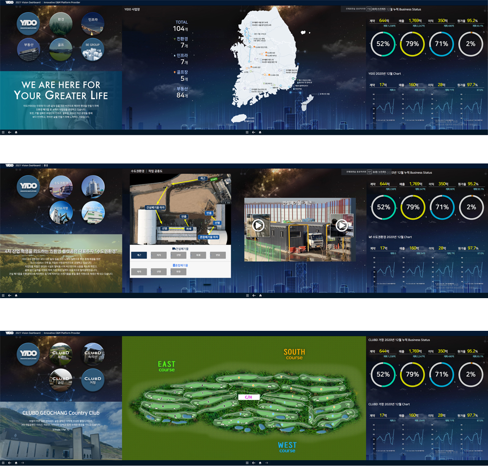

데이터 시각화 · 내부 대시보드
Dashboard UI
회사 내부 운영 데이터를 한눈에 파악하고 빠른 의사결정을 지원하는 대시보드 UI 설계. 복잡한 데이터 구조를 명확한 정보 계층과 차트로 시각화해 업무 효율을 높였습니다.
대시보드
데이터 시각화
내부 서비스
Figma

01 — 화면 설계
데이터 중심의 인터페이스를 설계했어요
방대한 운영 데이터를 의사결정자가 빠르게 파악할 수 있도록 정보 계층을 재정리했습니다. 핵심 KPI는 상단에 카드로 배치하고, 트렌드 차트·분포 그래프·상세 테이블을 역할에 따라 커스터마이징할 수 있는 모듈형 대시보드 구조를 설계했습니다.
